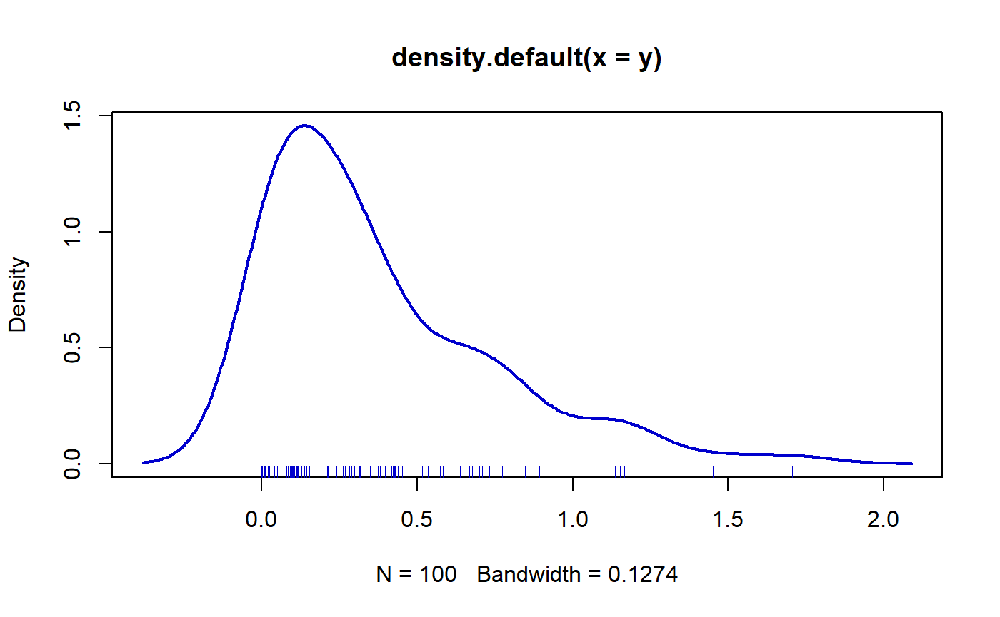

Distributions.RmdIn this vignette we explain how to use the functions available in the package to estimate parameters for each new distribution. First we need to require the RelDists package.
require(RelDists)
## Loading required package: RelDistsFirst, we simulate 100 values for the distribution using known parameters.
y <- rEW(n=100, mu=2, sigma=1.5, nu=0.5)Next figure shows the density for the y vector.
plot(density(y), lwd=2, col='blue3')
rug(y, col='blue3')
Now we use the gamlss function from gamlss package to estimate the parameters.
# Fitting the model
mod <- gamlss::gamlss(y~1, sigma.fo=~1, nu.fo=~1, family='EW')
## GAMLSS-RS iteration 1: Global Deviance = -9.576
## GAMLSS-RS iteration 2: Global Deviance = -10.0386
## GAMLSS-RS iteration 3: Global Deviance = -10.1521
## GAMLSS-RS iteration 4: Global Deviance = -10.2531
## GAMLSS-RS iteration 5: Global Deviance = -10.348
## GAMLSS-RS iteration 6: Global Deviance = -10.4333
## GAMLSS-RS iteration 7: Global Deviance = -10.5076
## GAMLSS-RS iteration 8: Global Deviance = -10.5761
## GAMLSS-RS iteration 9: Global Deviance = -10.6371
## GAMLSS-RS iteration 10: Global Deviance = -10.6916
## GAMLSS-RS iteration 11: Global Deviance = -10.7412
## GAMLSS-RS iteration 12: Global Deviance = -10.7849
## GAMLSS-RS iteration 13: Global Deviance = -10.8244
## GAMLSS-RS iteration 14: Global Deviance = -10.8569
## GAMLSS-RS iteration 15: Global Deviance = -10.8862
## GAMLSS-RS iteration 16: Global Deviance = -10.9126
## GAMLSS-RS iteration 17: Global Deviance = -10.9363
## GAMLSS-RS iteration 18: Global Deviance = -10.9576
## GAMLSS-RS iteration 19: Global Deviance = -10.9767
## GAMLSS-RS iteration 20: Global Deviance = -10.9938
## Warning in RS(): Algorithm RS has not yet convergedTo obtain the fitted values for \(\mu\), \(\sigma\) and \(\nu\) we use the inverse link function.
exp(coef(mod, what='mu'))
## (Intercept)
## 2.387084
exp(coef(mod, what='sigma'))
## (Intercept)
## 1.068425
exp(coef(mod, what='nu'))
## (Intercept)
## 0.7348312The results show that estimated parameters are close the true parameters \(\mu\), \(\sigma\) and \(\nu\).